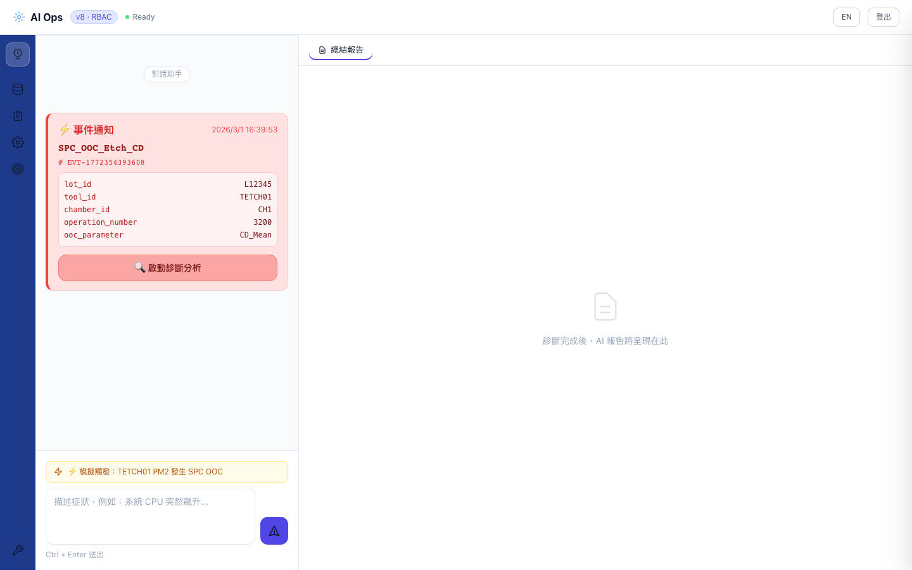
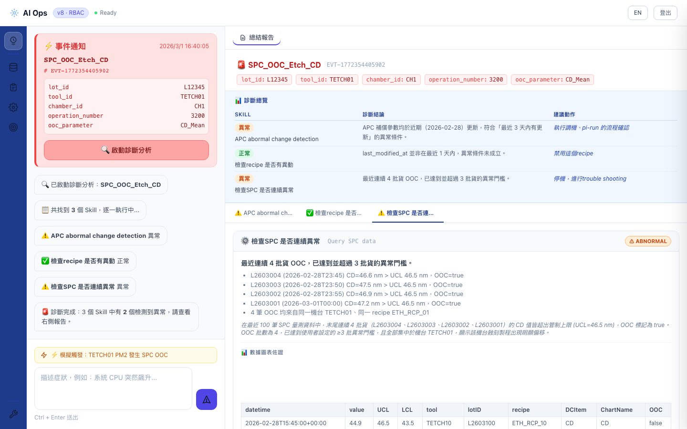

Chapter 3
SPC OOC 診斷完整示範
從事件觸發到診斷完成，以 SPC OOC 蝕刻異常為例，示範系統的完整執行流程與 SSE 漸進式串流機制。
Step 1：觸發 SPC OOC 事件

事件攜帶完整的 params：equipment_id=TETCH01、chamber_id=PM2、measurement_value=102.5（超過 UCL=100.0）、spc_chart_id=CD_MEAN。這些屬性會透過各 Skill 的 param_mappings 傳遞給對應的 MCP。
Step 2：SSE 串流診斷執行（漸進式渲染）
點擊「啟動診斷分析」後，系統以 Server-Sent Events 串流方式逐 Skill 推播結果：
→
start 事件：診斷開始右側報告區初始化，顯示事件 Header（事件型別、ID、params）
{"type":"start","skill_count":3,"event_type":"SPC_OOC_Etch_CD"}
→
skill_start × 3：各 Skill 開始左側聊天區依序顯示「⏳ 正在執行 {Skill 名稱}...」
🤖 LLM →
skill_done：每 Skill 完成立即推播Claude 完成診斷分析後，右側立即追加對應的診斷卡片 Tab，不等待其他 Skill
{"type":"skill_done","index":0,"status":"ABNORMAL","diagnosis":"...","recommendation":"..."}
→
done：全部完成渲染底部診斷摘要列，顯示各狀態計數

ℹ️ 為什麼使用 Fetch API 而非 EventSource？
瀏覽器的 EventSource API 不支援設定自定義 Header，無法傳遞 JWT Bearer Token。系統改用 Fetch API + ReadableStream，在設定 Authorization Header 的同時實現 SSE 串流。
Step 3：診斷結果 — 三個 Skill 的診斷卡片

